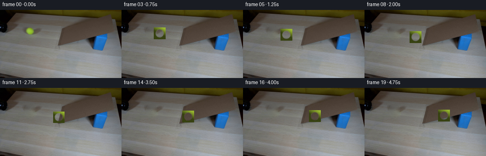
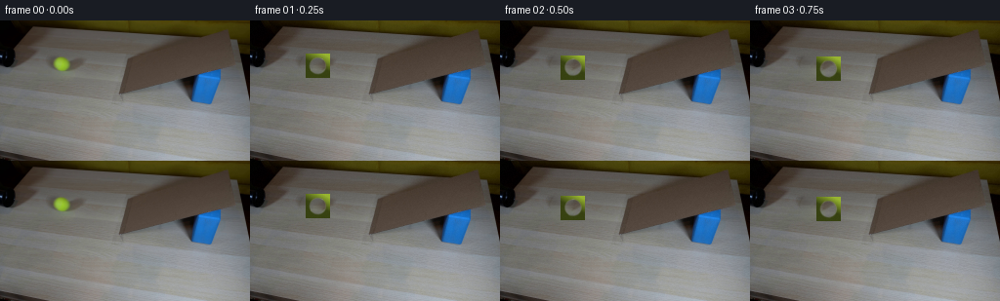
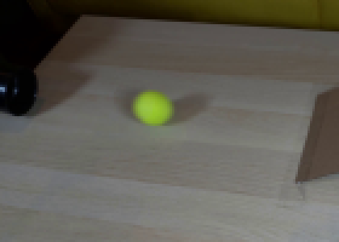
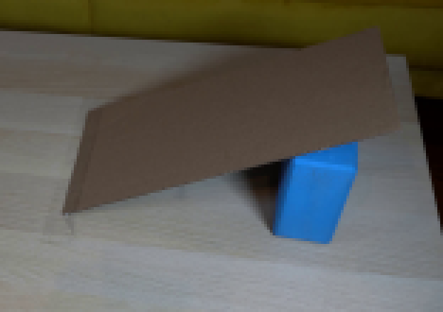
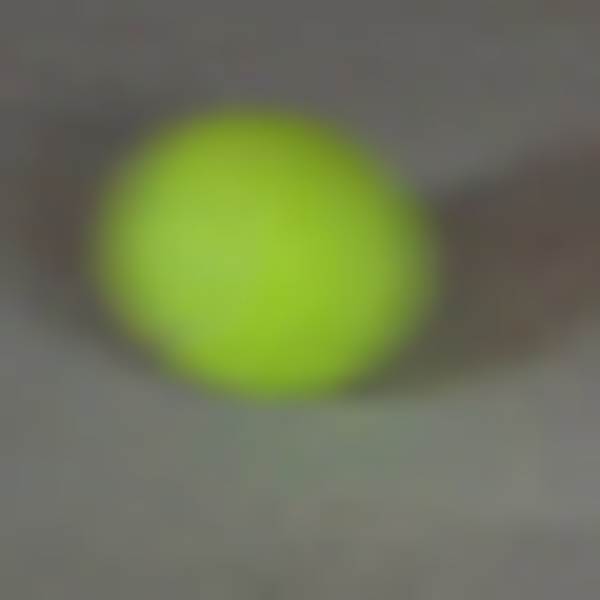
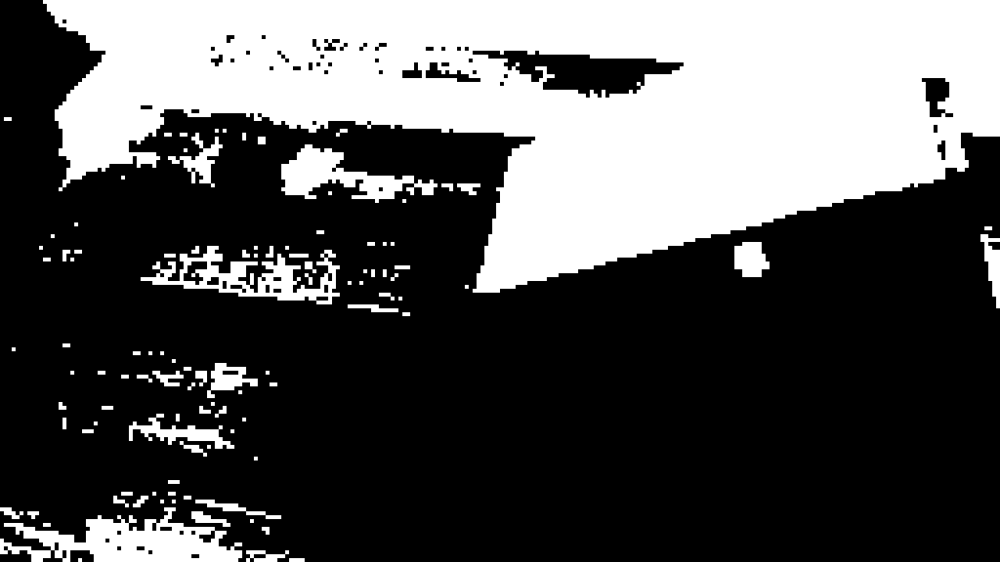
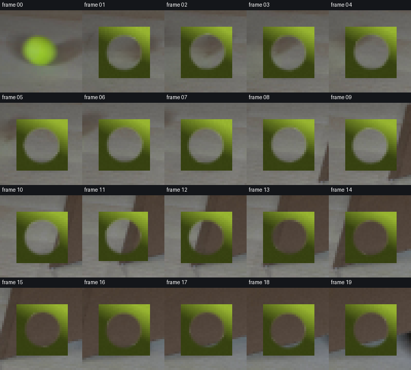
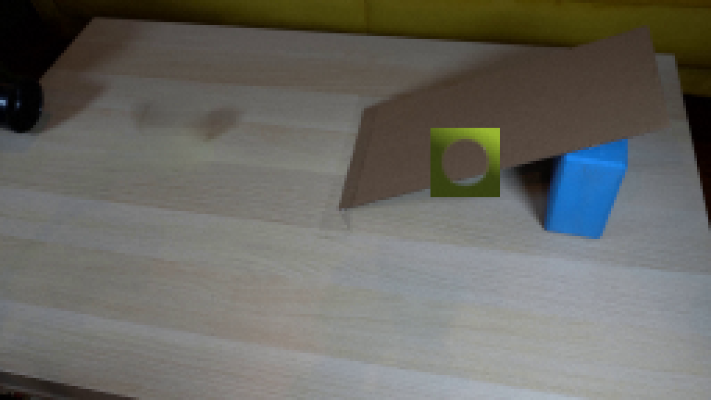
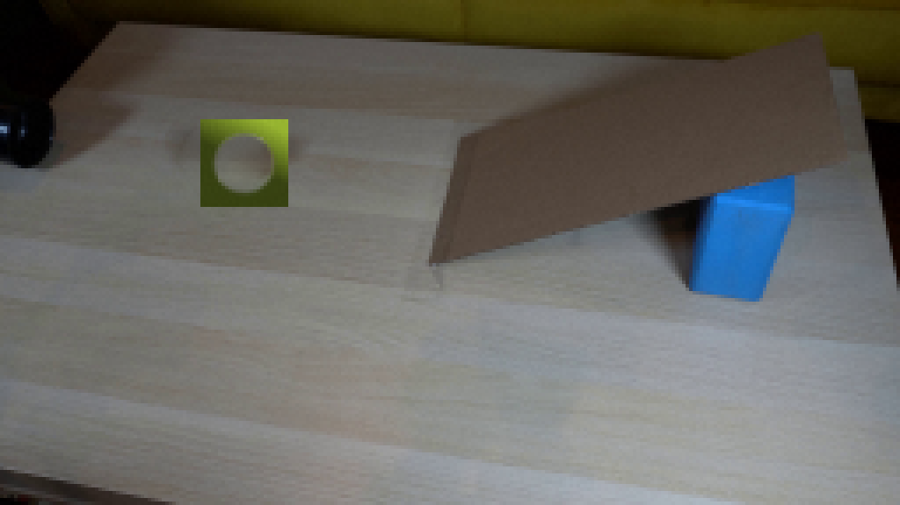

CODING AGENTS AS PIXEL WORLD MODELS
traex/DeepSeek-V4.1-Flash · 0021
点击播放 · 原生 RGB 像素
逐轮保存的候选
回放视频、检查图与代码变化。
每份候选均可单独播放。实际图片检查记录在下方工具轨迹中。
候选 01播放与检查图
点击播放 · 原生 RGB 像素


展开代码变化
--- 上一保存版本
+++ 本次保存版本
@@ -0,0 +1,204 @@
+from pathlib import Path
+
+import cv2
+import numpy as np
+from PIL import Image
+
+import artifact_io
+
+
+WIDTH = 256
+HEIGHT = 144
+FRAMES = 20
+FPS = 4
+BALL_RADIUS = 8.7
+
+
+def smoothstep(edge0, edge1, values):
+ t = np.clip((values - edge0) / (edge1 - edge0), 0.0, 1.0)
+ return t * t * (3.0 - 2.0 * t)
+
+
+def make_clean_plate(image):
+ """Remove the foreground ball while retaining the photographed scene."""
+ mask = np.zeros((HEIGHT, WIDTH), dtype=np.uint8)
+ cv2.ellipse(mask, (63, 45), (12, 11), 0, 0, 360, 255, -1)
+ cv2.ellipse(mask, (63, 53), (9, 4), 0, 0, 360, 255, -1)
+
+ repaired = cv2.inpaint(image, mask, 5, cv2.INPAINT_TELEA)
+ blend = cv2.GaussianBlur(mask.astype(np.float32) / 255.0, (0, 0), 1.2)
+ blend = np.clip(blend * 1.35, 0.0, 1.0)[..., None]
+ plate = image.astype(np.float32) * (1.0 - blend) + repaired.astype(np.float32) * blend
+
+ # Continue the table's horizontal grain through the small repaired patch.
+ yy, xx = np.mgrid[:HEIGHT, :WIDTH]
+ local = np.exp(-((xx - 63.0) / 12.0) ** 2 - ((yy - 46.0) / 10.0) ** 2)
+ grain = (
+ 1.5 * np.sin(yy * 1.73 + 0.05 * xx)
+ + 0.8 * np.sin(yy * 3.9 + 0.09 * xx)
+ )
+ plate += (local * grain)[..., None]
+ return np.clip(plate, 0, 255).astype(np.uint8)
+
+
+def ball_position(frame):
+ if frame <= 11:
+ u = frame / 11.0
+ x = 64.0 + 60.0 * u
+ y = 45.0 + 17.0 * u
+ distance = frame * np.hypot(60.0 / 11.0, 17.0 / 11.0)
+ else:
+ v = frame - 11
+ x = 124.0 + 5.45 * v
+ y = 62.0 - 0.085 * (x - 124.0)
+ approach = 11.0 * np.hypot(60.0 / 11.0, 17.0 / 11.0)
+ distance = approach + v * 5.45 * np.hypot(1.0, 0.085)
+ return float(x), float(y), distance
+
+
+def render_ball(center_x, center_y, distance):
+ """Render a shaded felt tennis ball at high resolution, then downsample."""
+ ss = 6
+ pad = 12.0
+ x0 = int(np.floor(center_x - pad))
+ y0 = int(np.floor(center_y - pad))
+ x1 = int(np.ceil(center_x + pad))
+ y1 = int(np.ceil(center_y + pad))
+ x0, y0 = max(x0, 0), max(y0, 0)
+ x1, y1 = min(x1, WIDTH), min(y1, HEIGHT)
+ width, height = x1 - x0, y1 - y0
+
+ hx = (np.arange(width * ss) + 0.5) / ss + x0
+ hy = (np.arange(height * ss) + 0.5) / ss + y0
+ xx, yy = np.meshgrid(hx, hy)
+ nx = (xx - center_x) / BALL_RADIUS
+ ny = (yy - center_y) / BALL_RADIUS
+ rr2 = nx * nx + ny * ny
+ inside = rr2 <= 1.0
+ nz = np.sqrt(np.clip(1.0 - rr2, 0.0, 1.0))
+
+ # Roll the surface pattern around the screen-normal axis. The seam's
+ # changing projected curve gives the small ball a readable roll.
+ angle = distance / BALL_RADIUS * 0.82
+ ca, sa = np.cos(angle), np.sin(angle)
+ ox = ca * nx - sa * ny
+ oy = sa * nx + ca * ny
+ oz = nz
+
+ light = np.array([0.30, -0.58, 0.76], dtype=np.float32)
+ light /= np.linalg.norm(light)
+ ndotl = np.clip(nx * light[0] + ny * light[1] + nz * light[2], 0.0, 1.0)
+ diffuse = 0.40 + 0.70 * ndotl
+ rim = np.clip(1.0 - nz, 0.0, 1.0)
+ diffuse *= 1.0 - 0.20 * rim
+
+ # Felt fibers are attached to the rotating surface rather than the screen.
+ fiber = (
+ 0.5
+ + 0.28 * np.sin(71.0 * ox + 37.0 * oy + 23.0 * oz)
+ + 0.22 * np.sin(113.0 * ox - 53.0 * oy + 17.0 * oz)
+ )
+ fiber = 0.91 + 0.13 * fiber
+ base = np.stack(
+ (
+ 177.0 * diffuse * fiber,
+ 211.0 * diffuse * fiber,
+ 57.0 * diffuse * fiber,
+ ),
+ axis=-1,
+ )
+
+ # One closed tennis seam, projected as a curved white band.
+ seam_axis = np.array([0.22, 0.76, 0.61], dtype=np.float32)
+ seam_axis /= np.linalg.norm(seam_axis)
+ seam_metric = np.abs(ox * seam_axis[0] + oy * seam_axis[1] + oz * seam_axis[2])
+ seam_width = 0.055 + 0.018 * np.clip(1.0 - nz, 0.0, 1.0)
+ seam = 1.0 - smoothstep(seam_width, seam_width + 0.025, seam_metric)
+ seam *= smoothstep(0.02, 0.12, nz)
+ seam_color = np.stack(
+ (
+ np.full_like(nz, 211.0),
+ np.full_like(nz, 218.0),
+ np.full_like(nz, 180.0),
+ ),
+ axis=-1,
+ )
+ seam_color *= (0.70 + 0.30 * ndotl)[..., None]
+ rgb = base * (1.0 - 0.78 * seam[..., None]) + seam_color * (0.78 * seam[..., None])
+
+ # Small, soft highlight seen on the original yellow felt ball.
+ spec = np.exp(-(((nx - 0.18) / 0.20) ** 2 + ((ny + 0.20) / 0.17) ** 2))
+ rgb += (spec * 20.0)[..., None]
+ rgb = np.clip(rgb, 0, 255).astype(np.uint8)
+
+ alpha = smoothstep(0.94, 1.015, np.sqrt(rr2))
+ alpha = np.clip(alpha, 0.0, 1.0)
+ alpha = cv2.GaussianBlur(alpha.astype(np.float32), (0, 0), 0.45 * ss)
+
+ rgb_small = cv2.resize(rgb, (width, height), interpolation=cv2.INTER_AREA)
+ alpha_small = cv2.resize(alpha, (width, height), interpolation=cv2.INTER_AREA)
+ alpha_small = np.clip(alpha_small, 0.0, 1.0)
+ return x0, y0, rgb_small, alpha_small
+
+
+def add_contact_shadow(frame, center_x, center_y, on_ramp):
+ yy, xx = np.mgrid[:HEIGHT, :WIDTH]
+ if on_ramp:
+ cx = center_x - 1.8
+ cy = center_y + BALL_RADIUS + 1.0
+ angle = -0.085
+ else:
+ cx = center_x - 1.2
+ cy = center_y + BALL_RADIUS + 0.6
+ angle = 0.0
+
+ ca, sa = np.cos(angle), np.sin(angle)
+ dx = (xx - cx) * ca + (yy - cy) * sa
+ dy = -(xx - cx) * sa + (yy - cy) * ca
+ shadow = np.exp(-0.5 * ((dx / 7.0) ** 2 + (dy / 2.15) ** 2))
+ shadow *= 0.18
+ result = frame.astype(np.float32) * (1.0 - shadow[..., None])
+ return np.clip(result, 0, 255).astype(np.uint8)
+
+
+def composite_ball(frame, center_x, center_y, distance):
+ x0, y0, rgb, alpha = render_ball(center_x, center_y, distance)
+ x1 = x0 + rgb.shape[1]
+ y1 = y0 + rgb.shape[0]
+ region = frame[y0:y1, x0:x1].astype(np.float32)
+ a = alpha[..., None]
+ frame[y0:y1, x0:x1] = np.clip(
+ region * (1.0 - a) + rgb.astype(np.float32) * a, 0, 255
+ ).astype(np.uint8)
+ return frame
+
+
+def main():
+ case_dir = Path(__file__).resolve().parent
+ original = np.asarray(Image.open(case_dir / "first_frame.png").convert("RGB"))
+ assert original.shape == (HEIGHT, WIDTH, 3)
+ plate = make_clean_plate(original)
+
+ frames = []
+ for index in range(FRAMES):
+ if index == 0:
+ frames.append(original.copy())
+ continue
+
+ x, y, distance = ball_position(index)
+ frame = plate.copy()
+ frame = add_contact_shadow(frame, x, y, on_ramp=index > 11)
+ frame = composite_ball(frame, x, y, distance)
+
+ # A restrained single-sample exposure variation keeps the still camera
+ # from looking mathematically frozen without disturbing the geometry.
+ rng = np.random.default_rng(1000 + index)
+ noise = rng.integers(-1, 2, size=(HEIGHT, WIDTH, 1), dtype=np.int16)
+ frames.append(np.clip(frame.astype(np.int16) + noise, 0, 255).astype(np.uint8))
+
+ frames = np.asarray(frames, dtype=np.uint8)
+ artifact_io.save(frames, case_dir)
+
+
+if __name__ == "__main__":
+ main()
可观测工具轨迹
实际执行的命令与返回图片。
命令 1exit 0
/bin/bash -lc "pwd && rg --files -g '"'!**/.git/**'"' | sed -n '1,120p'"
命令 2exit 0
/bin/bash -lc "printf '%s\\n' '--- prompt.txt ---'; sed -n '1,240p' prompt.txt; printf '%s\\n' '--- GENERATION_RULES.md ---'; sed -n '1,320p' GENERATION_RULES.md"
命令 3exit 0
/bin/bash -lc "sed -n '1,260p' artifact_io.py"
命令 4exit 1
/bin/bash -lc "identify -verbose first_frame.png | sed -n '1,100p'; command -v ffmpeg; command -v magick; command -v convert"
命令 5exit 0
/bin/bash -lc "sed -n '1,260p' player_template.html"
命令 6exit 0
/bin/bash -lc "python - <<'PY'
from PIL import Image
import numpy as np
im=np.array(Image.open('first_frame.png'))
print(im.shape, im.dtype, im[0,0], im[45,64])
for p in [(64,45),(24,38),(125,65),(243,18),(209,68),(200,77),(90,50),(140,60)]:
x,y=p; print(p, im[y,x])
PY
python - <<'PY'
mods=['numpy','PIL','scipy','cv2','imageio','skimage']
for m in mods:
try:
mod=__import__(m); print(m, getattr(mod,'__version__','ok'))
except Exception as e: print(m,'NO',e)
PY"命令 7exit 0
/bin/bash -lc "python - <<'PY'
from PIL import Image
im=Image.open('first_frame.png')
# nearest enlarged crops
im.crop((0,0,140,100)).resize((560,400), Image.Resampling.NEAREST).save('.tmp/left_crop.png')
im.crop((100,0,256,110)).resize((624,440), Image.Resampling.NEAREST).save('.tmp/right_crop.png')
PY"命令 8exit 0
/bin/bash -lc "python - <<'PY'
from PIL import Image
import numpy as np
im=np.array(Image.open('first_frame.png'))
for y in range(34,60,2):
print(y, ['%3d'%int(np.mean(im[y,x])) for x in range(50,80,2)])
print('RGB samples')
for y,x in [(39,60),(40,65),(44,58),(45,64),(48,68),(50,60),(51,55),(53,60),(54,65),(55,70)]:
print((x,y), im[y,x])
PY"命令 9exit 0
/bin/bash -lc "python - <<'PY'
from PIL import Image
import numpy as np
im=np.array(Image.open('first_frame.png'))
for y in range(44,82):
vals=[]
for x in range(116,256):
r,g,b=im[y,x]
if b>100 and b>r*1.35 and b>g*1.05: vals.append(x)
if vals: print(y, min(vals), max(vals), len(vals))
PY"命令 10exit 0
/bin/bash -lc "python - <<'PY'
from PIL import Image
import numpy as np
im=np.array(Image.open('first_frame.png')).astype(float)
# inspect brightness boundary along candidate ramp lower line
for x in [125,130,135,140,145,150,155,160,165,170,175,180,185,190,195,200,205,210,215,220,225,230,235,240,245,250]:
print(x, end=' ')
for y in range(38,88,2):
# grayscale
v=im[y,x].mean()
if 40<v<120:
print(f'{y}:{v:.0f}',end=' ')
print()
PY"命令 11exit 0
/bin/bash -lc "python - <<'PY'
from PIL import Image, ImageDraw
im=Image.open('first_frame.png')
im.crop((50,32,80,62)).resize((600,600), Image.Resampling.LANCZOS).save('.tmp/ball_lanczos.png')
PY"命令 12exit 0
/bin/bash -lc "python - <<'PY'
from PIL import Image
import numpy as np
im=np.array(Image.open('first_frame.png'))
y,x=np.ogrid[:144,:256]
for r in [7,8,9,10]:
m=(x-64.5)**2+(y-45.2)**2<r*r
p=im[m]
print(r,p.shape, np.mean(p,0), np.median(p,0), np.percentile(p,[10,50,90],axis=0))
PY"命令 13exit 0
/bin/bash -lc "python - <<'PY'
from PIL import Image
import numpy as np
im=np.array(Image.open('first_frame.png'))
for y in range(36,56):
xs=[]
for x in range(50,80):
r,g,b=im[y,x]
if g>r*1.06 and g>b*1.5 and g>105: xs.append(x)
print(y, min(xs) if xs else None, max(xs) if xs else None, len(xs))
PY"命令 14exit 0
/bin/bash -lc "python - <<'PY'
from PIL import Image
import numpy as np
im=np.array(Image.open('first_frame.png'))
# Print RGB boundary around ball for rows
for y in range(36,53):
vals=[]
for x in range(53,74):
r,g,b=map(int,im[y,x])
if g>r*1.02 and g>b*1.35 and g>90: vals.append((x,(r,g,b)))
if vals: print(y, vals[0], vals[-1], len(vals))
PY"命令 15exit 0
/bin/bash -lc "python - <<'PY'
from PIL import Image
import numpy as np
im=np.array(Image.open('first_frame.png'))
for x in [122,125,130,140,150,160,170,180,190,200,210,220,230,240,250]:
print('\\nx=',x)
for y in range(5,90,3):
r,g,b=map(int,im[y,x]); br=(r+g+b)/3
# classify brown: r>g+3, g>b+2, brightness 30-120
if r>g+2 and g>b+1 and 25<br<130: c='B'
elif br<50: c='D'
elif b>100 and b>r+20: c='U'
else: c='.'
print(c,end='')
print()
PY"命令 16exit 0
/bin/bash -lc "python - <<'PY'
import cv2, numpy as np
from PIL import Image
im=cv2.imread('first_frame.png')
mask=np.zeros(im.shape[:2],np.uint8)
# original ball bounding region; threshold-ish oval mask plus margin
cv2.ellipse(mask,(64,45),(11,10),0,0,360,255,-1)
for r in [3,5,8]:
out=cv2.inpaint(im,mask,r,cv2.INPAINT_TELEA)
cv2.imwrite(f'.tmp/inpaint{r}.png',out)
# crop enlarged
crop=out[28:62,46:82]
cv2.imwrite(f'.tmp/inpaint{r}_crop.png',cv2.resize(crop,(360,340),interpolation=cv2.INTER_NEAREST))
PY"命令 17exit 0
/bin/bash -lc "python - <<'PY'
import numpy as np
from PIL import Image
im=np.array(Image.open('first_frame.png'))
# save threshold masks for blue and cardboard around shapes
r,g,b=im[:,:,0].astype(int),im[:,:,1].astype(int),im[:,:,2].astype(int)
blue=(b>95)&(b>r+25)&(b>g+5)
brown=(r>g+2)&(g>b+2)&((r+g+b)/3<120)
for name,m in [('blue',blue),('brown',brown)]:
out=np.zeros_like(im); out[m]=[255,255,255]
Image.fromarray(out).resize((1024,576),Image.Resampling.NEAREST).save(f'.tmp/{name}_mask.png')
PY"命令 18exit 0
/bin/bash -lc "python - <<'PY'
from PIL import Image
import numpy as np
im=np.array(Image.open('first_frame.png')).astype(float)
# detect brown region boundaries with per-row threshold plus x span
for y in range(30,78,2):
vals=[]
for x in range(115,256):
r,g,b=im[y,x]
if r>g+2 and g>b+1 and 25<(r+g+b)/3<130: vals.append(x)
if vals: print(y,min(vals),max(vals))
PY"命令 19exit 0
/bin/bash -lc "python - <<'PY'
from PIL import Image
import numpy as np
im=np.array(Image.open('first_frame.png')).astype(float)
for x in range(118,151,2):
ys=[]
for y in range(35,90):
r,g,b=im[y,x]
if r>g+3 and g>b+2 and 20<(r+g+b)/3<130: ys.append(y)
print(x,min(ys) if ys else None,max(ys) if ys else None)
PY"命令 20exit 0
/bin/bash -lc "python generate.py && python - <<'PY'
from PIL import Image
import numpy as np
f=np.array(Image.open('frames/00.png'))
o=np.array(Image.open('first_frame.png').convert('RGB'))
print('frame0 exact',np.array_equal(f,o),'frames',len(__import__('glob').glob('frames/*.png')))
print('files', sorted(__import__('glob').glob('*')))
PY"命令 21exit 0
/bin/bash -lc "python - <<'PY'
from PIL import Image, ImageDraw
import glob
files=sorted(glob.glob('frames/*.png'))
# 20 crops centered around ball, 4x5 sheet, 80x80 each enlarged
sheet=Image.new('RGB',(5*160,4*180),(20,22,26)); d=ImageDraw.Draw(sheet)
for i,f in enumerate(files):
im=Image.open(f)
# centers use same trajectory
if i<=11: cx,cy=64+60*i/11,45+17*i/11
else: cx=124+5.45*(i-11); cy=62-.085*(cx-124)
box=(int(cx-20),int(cy-20),int(cx+20),int(cy+20))
crop=im.crop(box).resize((160,160),Image.Resampling.NEAREST)
x=(i%5)*160; y=(i//5)*180
sheet.paste(crop,(x,y+20)); d.text((x+4,y+3),f'frame {i:02d}',fill='white')
sheet.save('.tmp/ball_sheet.png')
# frames 1, 6, 12, 19 enlarged full
for i in [1,6,11,12,15,19]:
Image.open(f'frames/{i:02d}.png').resize((1024,576),Image.Resampling.NEAREST).save(f'.tmp/f{i:02d}.png')
PY"命令 22exit 1
/bin/bash -lc "python - <<'PY'
from PIL import Image
import numpy as np
for i in [0,1,2,3,4,5,6,7,8,9,10,11,12,13,14,15,16,17,18,19]:
im=np.array(Image.open(f'frames/{i:02d}.png')).astype(float)
if i<=11: cx,cy=64+60*i/11,45+17*i/11
else: cx=124+5.45*(i-11); cy=62-.085*(cx-124)
x,y=np.ogrid[:144,:256]; m=(x-cx)**2+(y-cy)**2<7.5**2
p=im[m]
print(i, 'center',round(cx,1),round(cy,1),'mean',np.round(p.mean(0),1),'max',np.round(p.max(0),1),'min',np.round(p.min(0),1))
PY"视觉工具实际返回图片 1

视觉工具实际返回图片 2

视觉工具实际返回图片 3

视觉工具实际返回图片 4

视觉工具实际返回图片 5
视觉工具实际返回图片 6

视觉工具实际返回图片 7

视觉工具实际返回图片 8

视觉工具实际返回图片 9

视觉工具实际返回图片 10

保存候选 1 份；完成命令 22 次；可验证图片返回 10 张。原始 API 响应与完整日志保留在本地。